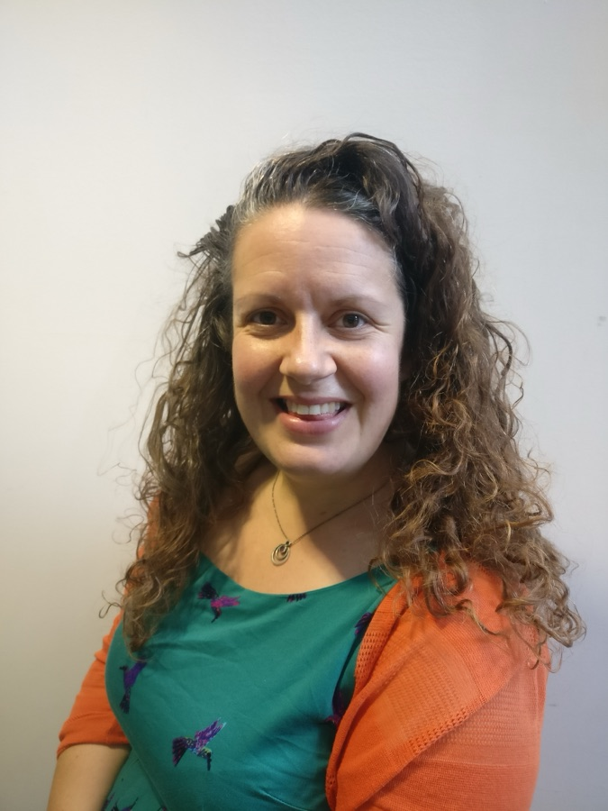

PGT student experience
A multi-institutional project (six researchers from three UK HEIs) investigating the experiences and motivations of postgraduate taught students.
PhD · NTF · CATE · SFHEA
Helping universities improve student belonging, engagement and success through research, strategy and evidence-informed practice.
Professor of Biology Education and Student Experience, and Associate Dean Student Experience and Outcomes, Faculty of Science, University of East Anglia.

I help universities create the conditions in which students thrive. My work spans the undergraduate and postgraduate experience, with a particular focus on belonging, engagement and the factors that shape continuation, success and progression. Through research, consultancy and collaborative enhancement projects, I work with institutions to understand how students experience university, and how policies, practices and cultures can strengthen or undermine their sense of connection and confidence. That includes retention, transition, assessment, the postgraduate experience, widening participation and inclusive learning communities.
I founded the international Student Belonging Community of Practice (600+ members) and lead multi-institution research on the postgraduate student experience.
Collaborative, multi-institutional projects on how students arrive, settle and thrive in higher education.
A multi-institutional project (six researchers from three UK HEIs) investigating the experiences and motivations of postgraduate taught students.
A multi-year, multi-colleague project investigating how practical skills develop as students progress through their first year in HE.
With Dr David Gilani (Middlesex), investigating changes in the research effort focused on student belonging, supported by a research assistant funded through my University Teaching Fellowship.
A platform supporting the transition into university for BIO students, now used across UEA and by multiple external HEIs.
Exploring vivas as an alternative way of assessing students' practical skills and subject knowledge.
A staff–student partnership exploring what happens when students lead the conversation with HE practitioners.
Awards and nominations for teaching excellence and student support.
One of the few people to hold both, awarded in the same year (CATE as deputy team lead).
Peer-reviewed articles, books, chapters and preprints.
This list is built from OpenAlex, linked to ORCID 0000-0001-5351-3721, each time the page opens, so new papers appear on their own. Preprints are hidden once the published version appears.
Edited volumes, textbook contributions and pieces for the wider higher education community.
Practical case studies to foster a sense of belonging across the higher education student journey. Co-edited with David Gilani. Routledge.
Multiple chapter contributions to Scott et al. (2022), the flagship Oxford University Press textbook; now writing for the 2nd edition. Also a chapter in the forthcoming OUP volume Contextualising the Biosciences (ed. Tanesha Allen).
Keynotes, talks and panels in the UK, Europe and the US.
Live dissections, festival stands, radio and children's lectures.
Part of the UEA academic team at the Royal Institution, an in-person and live-streamed event with an expected global audience of more than 2 million.
Regular presenter of family science events, and panellist at the “X-Rated Nature” closing event in 2024.
Invited panellist on the Radio 4 show.
Member of the UEA team supporting the series.
Co-organised the “Rain Beetles” activity stand for families.
An Advent Animal Adventure: Discovering Life on Earth, a sold-out lecture.
I welcome enquiries about consultancy, collaboration, speaking invitations and the Student Belonging Community of Practice.
School of Biological Sciences, University of East Anglia, Norwich, UK